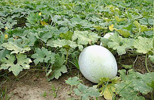
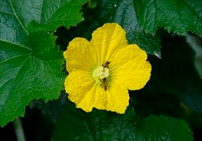

HORT 281 :: Lecture 09 :: ORIGIN, AREA, PRODUCTION, VARIETIES, PACKAGE OF PRACTICES FOR ASH GOURD

Origin, area, production, varieties, package of practices for ASH GOURD
Ash Gourd (Wax Gourd) (Benincasa hispida Cong.) (2n = 24) (Hindi): Petha)
Ash gourd is cultivated for its immature as well as mature fruits which are used as a cooked vegetable and are used in confectionary and ayurvedic medicinal preparations. The delicacy ‘Petha’ made out of ash gourd is famous all over India. A small fruited medicinal ash gourd is also grown in Kerala. The famous ayurvedic preparation ‘Kooshmanda rasayana’ is made of ash gourd fruits. Ash gourd is good for people suffering from nervousness.
Origin and distribution
Crop originated in Asia specifically in Java and Japan. It is grown throughout old world tropics and is less common in new world tropics. In India, the crop is widely grown in UP and Delhi for preparation of ‘Agra petha’ and in southern states for use as vegetable.
Botany
Genus Benincasa is monotypic and the only species is B. hispida. Wild forms do not exist in this species. Ash gourd is diploid with 2n=24. It is a vigorous but slow growing trailing annual. Due to long tap root system, ash gourd is considered as an ideal crop for river bed cultivation. Stem and all other parts are covered with bristle-like hairs. This monoecious crop produces large male flowers with long pedicels and female flowers with densely haired ovary and short peduncle on same plant. Corolla is yellow in colour and large in size. Ratio of staminate to pistillate flowers is 34:1. Anthesis takes place at 4.30 – 7.30 a.m. and anther dehiscence is at
3.00 – 5.00 a.m. Stigma is receptive from 8 hours before to 18 hours after anthesis.
|  |  |
Variety
Variability in ash gourd is limited except for size and shape of fruits. The improved varieties are:
Developing Institution |
Variety |
Special features |
Kerala Agricultural University, Thrissur. |
KAU Local |
Medium sized oval to oblong fruits with high flesh thickness, fruit length 45-55 cm. Length: Breadth ratio 2.05, fruit weight 6.1-8.1 kg, productivity 28.2 t/ha. |
|
Indu |
Medium sized round fruits, tolerant to mosaic disease, av. fruit length 24.3 cm. |
Tamil Nadu Agricultural University. |
CO.1 |
Fruits round, av. fruit weight 5-6 kg. Duration 140 days. |
|
CO.2 |
Fruits small and long spherical, av. fruit weight 3.0 kg. |
APAU, Hyderabad. |
APAU Shakthi |
Fruits long and cylindrical, yield 30-35 t/ha in 140-150 days. |
UAS, Bangalore. |
“Karikumbala” |
Local cultivar where the fruits are covered with ashy coat. |
IIVR, Varanasi. |
IVAG.502 |
Fruits oblong with average weight of 12-13 kg. Yield 30-35 t/ha. |
In addition to above open pollinated varieties, a few F1 hybrids like MAH 1; MHAG 2 etc. are developed under private sector in the country.
Climate
Ash gourd is a warm season crop and is susceptible to frost. The crop comes up very well in humid and high rainfall areas also. The ideal temperature for growth and production is 24-30oC.
Season
In areas, where winter is mild, crop is grown throughout the year. As a rainfed crop, it is sown by May in Kerala and by June-July in Tamil Nadu. In North India, it is mainly grown during summer and rainy seasons.
Cultivation
Growth and cultivation practices like spacing, fertilizer requirement and irrigation are similar to that of pumpkin.
Germination and fruit set are better, when 3-4 months old seeds are used for sowing than fresh seeds. Initial growth of ash gourd plant is slow when compared to pumpkin. Hence, fast growing and short duration crops like cucumber, oriental pickling melon etc. can be grown as intercrops along with ash gourd.
Seed rate recommended is 0.75 – 1.0 kg/ha under pit system in Kerala and 5.0 kg/ha under furrow system in North Indian conditions. If fruits are harvested at tender stage at frequent intervals, apply fertilizer in more splits as top-dressing.
Harvest
Fruits are harvested at immature and fully mature stages depending on demand in each locality. Immature fruits are harvested one week after anthesis and harvesting is done at weekly intervals. Mature fruits for storage, long distance transport and for seed extraction are harvested after full development of waxy coating on fruit surface.
Yield 10-15 t/ha when fruits are harvested at mature stage.
25-30 t/ha when fruits are harvested at immature stage.
Seed production
Follow common procedure of cucurbits for seed production. For seed purpose, fruits are allowed to mature till vines and fruits stalks are completely dried. It is advisable to preserve the fruits for 2-3 months before extraction of seeds. Seeds along with placenta are scooped out from cut fruits and allowed to ferment overnight. Seeds are then washed in running water and allowed to dry till 8% moisture content. Germination of seeds extracted from freshly harvested fruits is very low. To avoid the dormancy factor, fruits as such or seeds after extraction are preserved for 2-3 months before sowing. Seed yield is 175-200 kg/ha.
Application of fertilizers: Apply 10 kg FYM per pit and 100 g of NPK 6:12:12 mixture/pit and 10g N/pit 30 days after sowing.
********
- Botanical name of Ash gourd
a. Benincasa hispida |
b. Trichosanthes cucumerina |
c. Cucurbita maschata |
d. Cucurbita pepo |
- _________ is the common native confectionary prepared from ash gourd in North India
a. Petha |
b. Jam |
c. Jelly |
d. None |
- Ash gourd is predominantly a crop
a. Monoecious |
b. Dioecious |
c. Androgynocious |
d. None |
- In ash gourd, the sex ratio varies from __________
a. 20:1 to 33:1 |
b. 40:1 to 45:1 |
c. 5:1 to 10:1 |
d. 10:1 to 15:1 |
- The maturity indices for harvesting wax gourd is
a. Appearance of ashy bloom |
b. Disappearance of ashy bloom |
c. Wine drying |
d. Petiole drying |
| Download this lecture as PDF here |